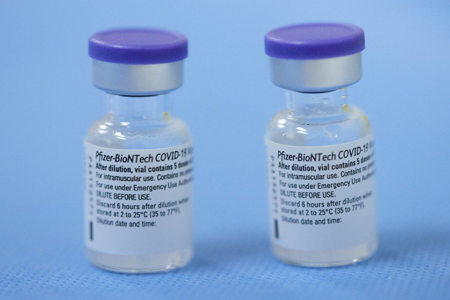
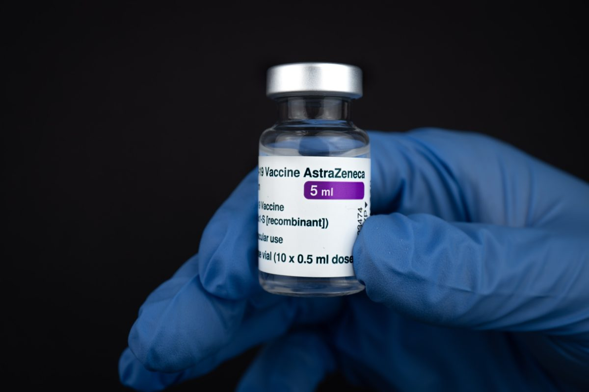
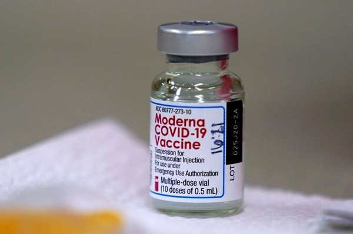

mRNA（信使RNA）疫苗莫德納（Moderna）、輝瑞／BNT疫苗
mRNA疫苗會將能製造新冠病毒表面棘狀蛋白的mRNA送至人體細胞，並製造棘狀蛋白，藉此
驅動免疫系統攻擊與記憶此類病毒蛋白，產生對新冠病毒的免疫力
台灣使用的疫苗或許品項不同，不同疫苗的生效方式及效果、副作用頻率也略有不同，就由以下的圖表來介紹我們台灣目前擁有的四種疫苗:
| 疫苗品名 | 國內核准使用年齡 | 常見副作用 | 接種劑量 | 接種間隔 (ACIP建議) |
疫苗種類 | 疫苗外觀 | |
|---|---|---|---|---|---|---|---|
| BioNTech (BNT) |
12歲以上 | 嘔吐、接種部 位產稱硬塊 |
2劑 | 至少28天 | mRNA | 白色~微白色 |  |
| AstraZeneca (AZ) |
18歲以上 | 接種部位膨脹 、泛紅、噁心 |
2劑 | 至少8週以上 | 腺病毒載體 | 無色~微棕色 |  |
| Moderna (莫德納) |
12歲以上 | 接種部位紅斑 、泛紅 |
2劑 | 至少28天 | mRNA | 白色~微白色 |  |
| 高端 | 20歲以上 | 無 | 2劑 | 間隔為28天 | 蛋白質次單元疫苗 | 無色 |
對於不了解疫苗種類的人，來這裡就對了，目前主要有4種不同種類的新冠疫苗，製造技術各有不同:
mRNA疫苗會將能製造新冠病毒表面棘狀蛋白的mRNA送至人體細胞，並製造棘狀蛋白，藉此
驅動免疫系統攻擊與記憶此類病毒蛋白，產生對新冠病毒的免疫力
利用基因重組技術製作出病毒表面棘狀蛋白，做成疫苗打入人體，讓免疫系統產生免疫
反應
將一段製造病毒表面棘狀蛋白的DNA放入無毒性的腺病毒中，最後將之遞送至人體細胞
，誘發免疫反應
用較傳統的方式製作，採用失去活性死毒疫苗及降低病毒活性後的減毒疫苗刺激人體免
疫系統。(因為台灣沒有引入此疫苗，因此不納入疫苗介紹的廢籌)
資料來源
https://www.cdc.gov.tw/File/Get/2s-x_8SK42E9pxLGUpF5Jg
https://www.cgmh.org.tw/cgmn/category.asp?id_seq=2103011#.Yc1Gw2BByUl
https://www.edh.tw/article/27404